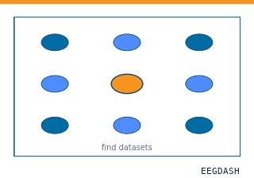
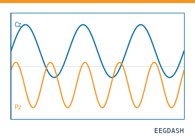
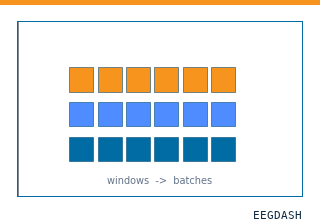
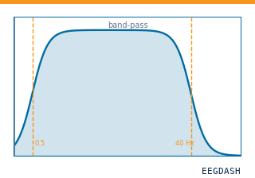
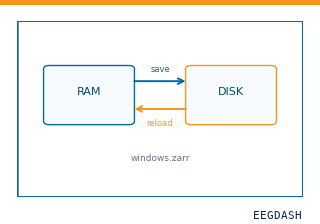
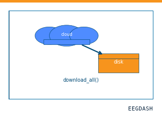

DS004993: ieeg dataset, 3 subjects#
WIRED ICM Sample Dataset - Workshop on Intracranial Recordings in Humans, Epilepsy, DBS
Citation: Liberty S. Hamilton, Maansi Desai, Alyssa Field (2019). WIRED ICM Sample Dataset - Workshop on Intracranial Recordings in Humans, Epilepsy, DBS. 10.18112/openneuro.ds004993.v1.1.2
3-participant iEEG dataset — WIRED ICM Sample Dataset - Workshop on Intracranial Recordings in Humans, Epilepsy, DBS.
Quickstart#
Install
pip install eegdash
Access the data
from eegdash.dataset import DS004993
dataset = DS004993(cache_dir="./data")
# Get the raw object of the first recording
raw = dataset.datasets[0].raw
print(raw.info)
Filter by subject
dataset = DS004993(cache_dir="./data", subject="01")
Advanced query
dataset = DS004993(
cache_dir="./data",
query={"subject": {"$in": ["01", "02"]}},
)
Iterate recordings
for rec in dataset:
print(rec.subject, rec.raw.info['sfreq'])
If you use this dataset in your research, please cite the original authors.
BibTeX
@dataset{ds004993,
title = {WIRED ICM Sample Dataset - Workshop on Intracranial Recordings in Humans, Epilepsy, DBS},
author = {Liberty S. Hamilton and Maansi Desai and Alyssa Field},
doi = {10.18112/openneuro.ds004993.v1.1.2},
url = {https://doi.org/10.18112/openneuro.ds004993.v1.1.2},
}
About This Dataset#
Contributors: Liberty S. Hamilton, PhD, Maansi Desai, PhD, Alyssa Field, MEd
Email: liberty.hamilton@austin.utexas.edu This is a sample BIDS dataset for the WIRED ICM course in Paris, France in March 2024.
This contains intracranial recordings collected by the Hamilton Lab at the University of Texas at Austin. These recordings include examples of evoked data during natural listening tasks along with some examples of seizure-related activity and vagus nerve stimulator (VNS) artifact for illustrative purposes. All procedures were approved by the University of Texas at Austin Institutional Review Board.
Funding: Support was provided by the National Institutes of Health National Institute on Deafness and Other Communication Disorders (R01 DC018579, to LSH).
WIRED ICM TUTORIAL DATA
Tasks:
movietrailers- this task involves patients listening to movie clips from various Pixar, Disney, Dreamworks, and other movies. We have published previously using these stimuli in EEG (Desai et al. 2021).
timit4andtimit5- these tasks involve patients listening to subsets of the TIMIT acoustic phonetic corpus (Garofolo et al 1993). The events provided in the dataset mark the onset and offset of each sentence. Intimit4, each sentence is unique, while intimit5, 10 sentences are repeated 10 times. This is the same stimulus set used in Mesgarani et al. 2014, Hamilton et al. 2018, Hamilton et al. 2021, and Desai et. al 2021.Notes:
* The movie trailer data for subject W1 was acquired at the start of a generalized tonic clonic seizure, and the research session was terminated. Large, synchronized spikes can be observed on multiple channels on the right parietal grid throughout the iEEG data. * The TIMIT data for subject W2 is an example of fairly clean sentence evoked data. * The TIMIT data for subject W3 is a good example of on-and-off VNS artifact. The VNS has a strong artifact at ~20 Hz. Some patients with epilepsy may have these implanted devices to help control their seizures, so you should know how to spot artifact-related activity. Despite these artifacts, the evoked responses to sentences are quite strong. * The acquisition number (B3, B8, etc) has to do with the order in which this task was run relative to other tasks in an iEEG session, and can be ignored here.
References
* Appelhoff, S., Sanderson, M., Brooks, T., Vliet, M., Quentin, R., Holdgraf, C., Chaumon, M., Mikulan, E., Tavabi, K., Höchenberger, R., Welke, D., Brunner, C., Rockhill, A., Larson, E., Gramfort, A. and Jas, M. (2019). MNE-BIDS: Organizing electrophysiological data into the BIDS format and facilitating their analysis. Journal of Open Source Software 4: (1896). https://doi.org/10.21105/joss.01896 * Desai, M., Holder, J., Villarreal, C., Clark, N., Hoang, B., & Hamilton, L. S. (2021). Generalizable EEG encoding models with naturalistic audiovisual stimuli. Journal of Neuroscience, 41(43), 8946-8962. * Garofolo, J. S., Lamel, L. F., Fisher, W. M., Fiscus, J. G., & Pallett, D. S. (1993). DARPA TIMIT acoustic-phonetic continous speech corpus CD-ROM. NIST speech disc 1-1.1. NASA STI/Recon technical report n, 93, 27403. * Hamilton, L. S., Edwards, E., & Chang, E. F. (2018). A spatial map of onset and sustained responses to speech in the human superior temporal gyrus. Current Biology, 28(12), 1860-1871. * Hamilton, L. S., Oganian, Y., Hall, J., & Chang, E. F. (2021). Parallel and distributed encoding of speech across human auditory cortex. Cell, 184(18), 4626-4639. * Holdgraf, C., Appelhoff, S., Bickel, S., Bouchard, K., D’Ambrosio, S., David, O., … Hermes, D. (2019). iEEG-BIDS, extending the Brain Imaging Data Structure specification to human intracranial electrophysiology. Scientific Data, 6, 102. https://doi.org/10.1038/s41597-019-0105-7 * Mesgarani, N., Cheung, C., Johnson, K., & Chang, E. F. (2014). Phonetic feature encoding in human superior temporal gyrus. Science, 343(6174), 1006-1010.
Cohort#
Dataset Statistics#
Age distribution by gender (n=3, range 14–19 yr, mean 16.0 yr)
Sex composition
Channel counts (ch)
Sampling frequencies (Hz)
Total recording duration: 13 min
Signal · Electrodes & live trace#
Live trace viewer — sub-W1 · ses-iemu · task-movietrailers · run-01
Showing one representative recording out of
3 subjects and 3 recordings in this dataset.
Browse the full set on OpenNeuro;
drop any other _ieeg.{set,edf,bdf,vhdr} file onto the
viewer (or pass ?ieeg=<url>) to inspect it.
Electrode layout — iEEG · 148 sensors — 148 channels
NEMAR Processing Statistics#
The plots below are generated by NEMAR’s automated EEG pipeline. The histogram shows pipeline success for data cleaning and ICA decomposition, the percentage of data frames and EEG channels retained after artefact removal, line noise per channel (RMS, dB), and the age/gender distribution of participants.

HED event descriptors word cloud

Manifest#
File Explorer#
Browse the BIDS file structure of this dataset. Records are fetched on demand from the EEGDash catalog the first time you open the explorer.
Full dataset metadata table
Dataset ID |
|
Title |
WIRED ICM Sample Dataset - Workshop on Intracranial Recordings in Humans, Epilepsy, DBS |
Author (year) |
|
Canonical |
— |
Importable as |
|
Year |
2019 |
Authors |
Liberty S. Hamilton, Maansi Desai, Alyssa Field |
License |
CC0 |
Citation / DOI |
|
Source links |
OpenNeuro | NeMAR | Source URL |
Copy-paste BibTeX
@dataset{ds004993,
title = {WIRED ICM Sample Dataset - Workshop on Intracranial Recordings in Humans, Epilepsy, DBS},
author = {Liberty S. Hamilton and Maansi Desai and Alyssa Field},
doi = {10.18112/openneuro.ds004993.v1.1.2},
url = {https://doi.org/10.18112/openneuro.ds004993.v1.1.2},
}
API Reference#
eegdash.datasetEEGDashDatasetDS004993 · Hamilton2024eegdash/dataset/registry.py · [source ↗]- class eegdash.dataset.DS004993(cache_dir: str, query: dict | None = None, s3_bucket: str | None = None, **kwargs)[source]#
WIRED ICM Sample Dataset - Workshop on Intracranial Recordings in Humans, Epilepsy, DBS
- Study:
ds004993(OpenNeuro)- Author (year):
Hamilton2024- Canonical:
—
Also importable as:
DS004993,Hamilton2024.Modality:
ieeg; Experiment type:Perception; Subject type:Epilepsy. Subjects: 3; recordings: 3; tasks: 3.- Parameters:
cache_dir (str | Path) – Directory where data are cached locally.
query (dict | None) – Additional MongoDB-style filters to AND with the dataset selection. Must not contain the key
dataset.s3_bucket (str | None) – Base S3 bucket used to locate the data.
**kwargs (dict) – Additional keyword arguments forwarded to
EEGDashDataset.
- data_dir#
Local dataset cache directory (
cache_dir / dataset_id).- Type:
Path
Notes
Each item is a recording; recording-level metadata are available via
dataset.description.querysupports MongoDB-style filters on fields inALLOWED_QUERY_FIELDSand is combined with the dataset filter. Dataset-specific caveats are not provided in the summary metadata.References
OpenNeuro dataset: https://openneuro.org/datasets/ds004993 NeMAR dataset: https://nemar.org/dataexplorer/detail?dataset_id=ds004993 DOI: https://doi.org/10.18112/openneuro.ds004993.v1.1.2 NEMAR citation count: 0
Examples
>>> from eegdash.dataset import DS004993 >>> dataset = DS004993(cache_dir="./data") >>> recording = dataset[0] >>> raw = recording.load()
- __init__(cache_dir: str, query: dict | None = None, s3_bucket: str | None = None, **kwargs)[source]#
- save(path: str, overwrite: bool = False, offset: int = 0)[source]#
Save datasets to files by creating one subdirectory for each dataset:
path/ 0/ 0-raw.fif | 0-epo.fif description.json raw_preproc_kwargs.json (if raws were preprocessed) window_kwargs.json (if this is a windowed dataset) window_preproc_kwargs.json (if windows were preprocessed) target_name.json (if target_name is not None and dataset is raw) 1/ 1-raw.fif | 1-epo.fif description.json raw_preproc_kwargs.json (if raws were preprocessed) window_kwargs.json (if this is a windowed dataset) window_preproc_kwargs.json (if windows were preprocessed) target_name.json (if target_name is not None and dataset is raw)
- Parameters:
path (str) –
- Directory in which subdirectories are created to store
-raw.fif | -epo.fif and .json files to.
overwrite (bool) – Whether to delete old subdirectories that will be saved to in this call.
offset (int) – If provided, the integer is added to the id of the dataset in the concat. This is useful in the setting of very large datasets, where one dataset has to be processed and saved at a time to account for its original position.
BaseDataset from braindecode — windowed via create_windows_from_events.braindecodeDataLoader; supports parallel workers and on-the-fly augmentations.pytorchdatasets.load_dataset("EEGDash/ds004993").huggingface
Find datasets with the EEGDash APIQuery the catalogue, filter by task or modality, list candidates.
Load one EEG recordingResolve a single record to an MNE Raw with channels and events.
EEG recording to PyTorch DataLoaderWrap braindecode windows in a DataLoader for model training.
Preprocess EEG and create windowsFilter, resample, epoch — and persist the windowed dataset.
Save and reload prepared dataCache a windowed dataset to disk and reattach it without recompute.
Download a dataset locallyPrefetch BIDS files to a local cache and validate the layout.Swap any load_dataset(...) call for ds004993 to reproduce the tutorial on this dataset.
Citation
Liberty S. Hamilton, Maansi Desai, Alyssa Field (2019). WIRED ICM Sample Dataset - Workshop on Intracranial Recordings in Humans, Epilepsy, DBS. 10.18112/openneuro.ds004993.v1.1.2
Provenance
¹Contributed to openneuro in BIDS format.
²Curated & ingested by the EEGDash catalog; see CITATION.cff for canonical reference.
³Persistent identifier: 10.18112/openneuro.ds004993.v1.1.2.
See Also#
eegdash.dataset.EEGDashDataseteegdash.dataset